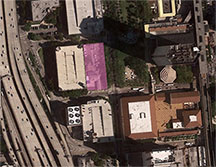
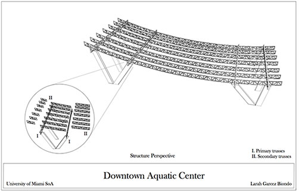

Downtown Miami Aquatic Center
The objective of this project was to design an aquatic center for downtown Miami, since one of the most underserviced sports in the area is swimming. The project is to design a swimming facility with an envelope that would allow it to function even during bad weather conditions.The site is located on the west side of NW 2nd Avenue between 1st and 2nd Street, and is composed of six lots property of Miami Dade County.
Given all the requirements of the project, I had one main focus in mind: create an aquatic center where people would feel as if they were outside and connected to nature but also give them the necessary privacy since the lot is in downtown and there is a high flow of people. Therefore, a huge panel of glass windows was created on the top part in order to have a lot of light and air circulation, while a screen of concrete and opaque glass was put on the bottom so swimmers could have a certain degree of privacy.
No doubt, one of the biggest challenges I faced while designing this project was the huge span I wanted to create without the use of many columns. The total length of the site is about 240ft, and in order to have a building of almost 200ft in length without any columns throughout, I created a V-like structure to each end of the building. These structures would support 4 primary trusses (2 on each side) where the other secondary trusses would attach to.
After everything was well thought-out and done, a sectional model at a 1/4"= 1'0" scale was built, to show the the primary and secondary structures of the building.